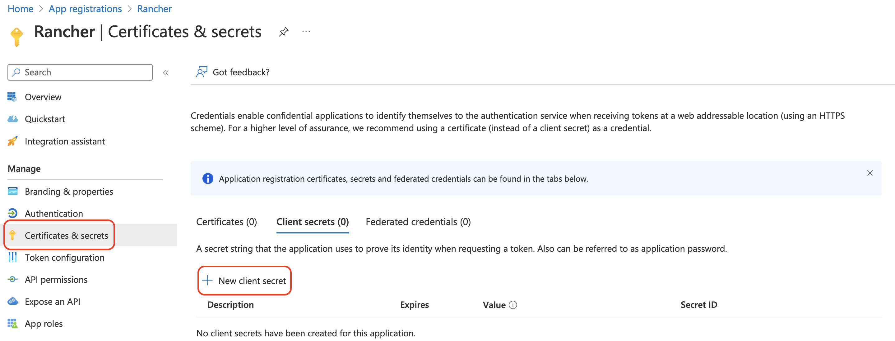

|
この文書は自動機械翻訳技術を使用して翻訳されています。 正確な翻訳を提供するように努めておりますが、翻訳された内容の完全性、正確性、信頼性については一切保証いたしません。 相違がある場合は、元の英語版 英語 が優先され、正式なテキストとなります。 |
Azure ADを設定する
Microsoft Graph API
Microsoft Graph APIは、Azure ADを設定するためのフローとなります。以下のセクションは、新しいユーザーが新しいインスタンスでAzure ADを設定するのを支援し、既存のAzureアプリの所有者が新しいフローに移行するのを支援します。
RancherにおけるMicrosoft Graph APIフローは常に進化しています。最新のパッチが適用された2.7のバージョンを使用することをお勧めします。これはまだアクティブに開発中で、新機能や改善が引き続き提供されます。
新しいユーザーのセットアップ
AzureにホストされているActive Directory（AD）のインスタンスがある場合、Rancherを設定してユーザーがADアカウントを使用してログインできるようにすることができます。Azure ADの外部認証の設定には、AzureとRancherの両方で設定を行う必要があります。
|
備考
|
Azure Active Directory設定の概要
Rancherを設定してユーザーがAzure ADアカウントで認証できるようにするには、複数の手順が必要です。始める前に、以下の概要を確認してください。
|
開始する前に、2つのブラウザタブを開いてください：1つはRancher用、もう1つはAzureポータル用です。これにより、ポータルからRancherに設定値をコピー＆ペーストするのが容易になります。 |
1.AzureにRancherを登録する
Rancher内でAzure ADを有効にする前に、RancherをAzureに登録する必要があります。
-
管理者ユーザーとして Microsoft Azureにログインしてください。今後の手順での設定には、管理者アクセス権が必要です。
-
*アプリ登録*サービスを開きます。
-
*新しいアプリ登録*をクリックし、フォームに記入します。

-
*名*を入力します（`Rancher`のようなもの）。
-
*サポートされているアカウントの種類*から、「この組織のディレクトリ内のアカウントのみ（AzureADTestのみ - シングルテナント）」を選択します。これは、従来のアプリ登録オプションに対応しています。
更新されたAzureポータルでは、リダイレクトURIは返信URLと同義です。RancherでAzure ADを使用するには、RancherをAzureでホワイトリストに登録する必要があります（以前は返信URLを通じて行われていました）。したがって、RancherサーバーのURLでリダイレクトURIを記入し、以下に示す検証パスを含めることを確認する必要があります。
-
リダイレクトURIセクションで、ドロップダウンから*Web*が選択されていることを確認し、ドロップダウンの隣のテキストボックスにRancherサーバーのURLを入力します。このRancherサーバーのURLには、以下に示す検証パスを追加する必要があります：
<MY_RANCHER_URL>/verify-auth-azure。RancherのAzure AD認証ページ（グローバルビュー > 認証 > Web）で、個別のAzureリダイレクトURI（返信URL）を見つけることができます。
-
*登録*をクリックします。
-
|
この変更が反映されるまで最大5分かかる場合があるため、Azure ADの設定後にすぐに認証できない場合でも驚かないでください。 |
2.新しいクライアントシークレットを作成します。
Azureポータルから、クライアントシークレットを作成します。Rancherは、このキーを使用してAzure ADと認証します。
-
検索を使用して*アプリ登録*サービスを開きます。次に、前の手順で作成したRancherのエントリを開きます。

-
ナビゲーションペインから、*証明書とシークレット*をクリックします。
-
*新しいクライアントシークレット*をクリックします。

-
*説明*を入力します（`Rancher`のようなもの）。
-
*有効期限*のオプションから期間を選択します。このドロップダウンメニューは、キーの有効期限を設定します。短い期間はより安全ですが、新しいキーをより頻繁に作成する必要があります。 アプリケーションシークレットが期限切れになると、ユーザーはRancherにログインできなくなることに注意してください。この問題を避けるために、Azureでシークレットをローテーションし、期限切れになる前にRancherで更新してください。
-
このキーは後でRancher UIに*アプリケーションシークレット*として入力します。Azure UI内でキーの値に再度アクセスできないため、セットアップの残りの間このウィンドウを開いたままにしてください。
3.Rancherのための必要な権限を設定します。
次に、Azure内でRancherのAPI権限を設定します。
|
アプリケーション権限を設定し、委任された権限_ではない_ことを確認してください。そうしないと、Azure ADにログインできなくなります。 |
-
ナビゲーションペインから、*API権限*を選択します。
-
*権限を追加*をクリックします。
-
Microsoft Graph APIから、次の*アプリケーション権限*を選択します：
Directory.Read.All
-
ナビゲーションバーの*API権限*に戻ります。そこから、*管理者の同意を付与*をクリックします。続いて*はい*をクリックします。アプリの権限は以下のようになります：

|
Rancherは、Azureでアプリに付与した権限を検証しません。RancherがADユーザーおよびグループと連携できる限り、任意の権限を試すことができます。 具体的には、Rancherは以下のアクションを許可する権限が必要です：
Rancherは、ユーザーのログインまたはユーザー/グループ検索を実行するためにこれらのアクションを行います。権限は`Application`タイプである必要があることを忘れないでください。 Rancherのニーズを満たす権限の組み合わせのいくつかの例を示します：
|
4.パブリッククライアントフローを許可する
Rancher CLIからログインするには、パブリッククライアントフローを許可する必要があります：
-
左側のナビゲーションメニューから、*認証*を選択します。
-
*詳細設定*の下で、*はい*を選択し、*パブリッククライアントフローを許可*の隣のトグルを切り替えます。

5.Azureアプリデータをコピーする

-
Rancherの*テナントID*を取得します。
-
検索を使用して*アプリ登録*を開きます。
-
Rancherのために作成したエントリを見つけます。
-
*ディレクトリID*をコピーし、Rancherに*テナントID*として貼り付けます。
-
-
Rancherの*アプリ（クライアント）ID*を取得します。
-
まだそこにいない場合は、検索を使用して*アプリ登録*を開きます。
-
*概要*で、Rancherのために作成したエントリを見つけます。
-
*アプリ（クライアント）ID*をコピーし、Rancherに*アプリID*として貼り付けます。
-
-
ほとんどの場合、エンドポイントオプションは標準または中国のいずれかになります。これらのオプションのいずれかについて、テナントID、アプリケーションID、*アプリケーションシークレット*を入力するだけで済みます。

カスタムエンドポイントの場合:
|
カスタムエンドポイントはRancherによってテストされておらず、完全にはサポートされていません。 |
Graph、トークン、およびAuthエンドポイントを手動で入力する必要があります。
-
*アプリ登録*から、*エンドポイント*をクリックします。

-
以下のエンドポイントがRancherのエンドポイント値になります。これらのエンドポイントのv1バージョンを使用することを確認してください。
-
Microsoft Graph APIエンドポイント (グラフエンドポイント)
-
OAuth 2.0トークンエンドポイント (v1) (トークンエンドポイント)
-
OAuth 2.0認証エンドポイント (v1) (認証エンドポイント)
-
6.RancherでAzure ADを構成します。
構成を完了するには、Rancher UIにADインスタンスに関する情報を入力してください。
-
Rancherにログインします。
-
左上隅で、*☰ > ユーザーと認証*をクリックします。
-
左側のナビゲーションメニューで、*認証プロバイダー*をクリックします。
-
*AzureAD*をクリックします。
-
*Azure ADアカウントの構成*フォームを、Azureアプリケーションデータのコピーを完了する際にコピーした情報を使用して完成させてください。
Azure ADアカウントには管理者権限が付与されます。これは、その詳細がRancherのローカルプリンシパルアカウントにマッピングされるためです。続行する前に、この権限レベルが適切であることを確認してください。
標準または中国エンドポイントの場合:
以下の表は、Azureポータルでコピーした値をRancherのフィールドにマッピングします：
Rancherフィールド Azure値 テナントID
ディクショナリID。
アプリケーション ID
アプリケーション ID
アプリケーションシークレット
キー値
エンドポイント
https://login.microsoftonline.com/
カスタムエンドポイントの場合:
以下の表は、カスタム設定値をRancherフィールドにマッピングします：
Rancherフィールド Azure値 グラフエンドポイント
Microsoft Graph API Endpoint
トークンエンドポイント
OAuth 2.0トークンエンドポイント
認証エンドポイント
OAuth 2.0認証エンドポイント
重要:カスタム設定でグラフエンドポイントを入力する際は、URLからテナントIDを削除してください：
https://graph.microsoft.com/abb5adde-bee8-4821-8b03-e63efdc7701c -
（オプション）Rancher v2.9.0以降では、生成されるログデータの量を減らすために、Azure AD内のユーザーのグループメンバーシップをフィルタリングできます。完全な手順については、Azure AD認証グループメンバーシップによるユーザーのフィルタリングのステップ4—5を参照してください。
-
［*有効］*をクリックします。
*結果:*Azure Active Directory認証が構成されています。
（オプション）複数のRancherドメインでの認証を構成する
複数のRancherドメインがある場合、Rancher UIを通じて複数のリダイレクトURIを構成することはできません。Azure AD設定ファイル`azuread`は、デフォルトで1つのリダイレクトURIのみを許可します。他のドメインに必要なリダイレクトURIを設定するには、`azuread`を手動で編集する必要があります。`azuread`を手動で編集しない場合、任意のドメインへのログイン試行が成功すると、Rancherは自動的にステップ1でアプリを登録した際に設定した*リダイレクトURI*の値にユーザーをリダイレクトします。RancherをAzureに登録する。
Azure AD Graph APIからMicrosoft Graph APIへの移行
Azure AD Graph APIは廃止され、2023年6月に退役するため、管理者はRancherで Microsoft Graph APIを使用するようにAzure ADアプリを更新する必要があります。 これは、エンドポイントが退役する前に十分に行う必要があります。 RancherがAzure AD Graph APIを使用するように構成されている場合、退役時にユーザーはAzure ADを使用してRancherにログインできなくなる可能性があります。
Rancher UIでのエンドポイントの更新
|
管理者は、以下に説明するエンドポイント移行にコミットする前に、Rancherバックアップを作成する必要があります。 |
-
更新 Azure ADアプリ登録の権限を更新してください。これは重要です。
-
Rancherにログインします。
-
Rancher UIのホームページでは、ユーザーにAzure AD認証を更新するように通知するバナーに注意してください。そのために提供されたリンクをクリックしてください。

-
新しいMicrosoft Graph APIへの移行を完了するには、*エンドポイントの更新*をクリックしてください。
更新を開始する前に、Azureアプリに新しい権限のセットがあることを確認してください。 
-
ポップアップ警告メッセージが表示されたら、*更新*をクリックしてください。

-
Rancherが実行するエンドポイントの変更の完全なリストについては、以下の表を参照してください。管理者はこれを手動で行う必要はありません。
エアギャップ環境
エアギャップ環境では、管理者はエンドポイントがホワイトリストに登録されていることを確認する必要があります（GraphエンドポイントURLが変更されるため、AzureにRancherを登録する手順3.2の注意を参照）。
移行のロールバック
移行をロールバックする必要がある場合は、以下の点に注意してください：
-
管理者は戻りたい場合、適切な復元処理を使用することを推奨します。参考のために、バックアップドキュメント、復元ドキュメント、および例を参照してください。
-
アプリケーションシークレットを回転させたいAzureアプリの所有者は、Rancherでもそれを回転させる必要があります。RancherはAzureで変更されたときにアプリケーションシークレットを自動的に更新しないためです。Rancherでは、それが`azureadconfig-applicationsecret`というKubernetesシークレットに保存されていることに注意してください。これは`cattle-global-data`名前空間にあります。
|
既存のAzure AD設定でRancher v2.7.0以上にアップグレードし、認証プロバイダーを無効にすることを選択した場合、以前の設定を復元することはできません。古いフローを使用してAzure ADを設定することはできません。新しい認証フローで再登録する必要があります。Rancherは現在Graph APIを使用しているため、ユーザーはAzureポータルで適切な権限を設定する必要があります。 |
Global:
| Rancherフィールド | 非推奨のエンドポイント |
|---|---|
認証エンドポイント |
https://login.microsoftonline.com/{tenantID}/oauth2/authorize |
エンドポイント |
https://login.microsoftonline.com/ |
グラフエンドポイント |
https://graph.windows.net/ |
トークンエンドポイント |
https://login.microsoftonline.com/{tenantID}/oauth2/token |
| Rancherフィールド | 新しいエンドポイント |
|---|---|
認証エンドポイント |
https://login.microsoftonline.com/{tenantID}/oauth2/v2.0/authorize |
エンドポイント |
https://login.microsoftonline.com/ |
グラフエンドポイント |
https://graph.microsoft.com |
トークンエンドポイント |
https://login.microsoftonline.com/{tenantID}/oauth2/v2.0/token |
中国：
| Rancherフィールド | 非推奨のエンドポイント |
|---|---|
認証エンドポイント |
https://login.chinacloudapi.cn/{tenantID}/oauth2/authorize |
エンドポイント |
https://login.chinacloudapi.cn/ |
グラフエンドポイント |
https://graph.chinacloudapi.cn/ |
トークンエンドポイント |
https://login.chinacloudapi.cn/{tenantID}/oauth2/token |
| Rancherフィールド | 新しいエンドポイント |
|---|---|
認証エンドポイント |
https://login.partner.microsoftonline.cn/{tenantID}/oauth2/v2.0/authorize |
エンドポイント |
https://login.partner.microsoftonline.cn/ |
グラフエンドポイント |
https://microsoftgraph.chinacloudapi.cn |
トークンエンドポイント |
https://login.partner.microsoftonline.cn/{tenantID}/oauth2/v2.0/token |
Azure AD認証グループメンバーシップによるユーザーのフィルタリング
Rancher v2.9.0以降では、生成されるログデータの量を減らすために、Azure ADからユーザーのグループメンバーシップをフィルタリングできます。初期設定中にグループメンバーシップをフィルタリングしなかった場合でも、既存のAzure AD設定にフィルターを追加できます。
|
ユーザーグループメンバーシップをフィルタリングすることは、ログ記録だけに影響を与えるわけではありません。 フィルターがRancherにユーザーが除外されたグループに属していることを認識させないため、そのグループからの権限も認識しません。これは、フィルターからグループを除外すると、ユーザーが持つべき権限を拒否する副作用があることを意味します。 |
-
Rancherの左上隅で、*☰ > ユーザーと認証*をクリックします。
-
左側のナビゲーションメニューで、*認証プロバイダー*をクリックします。
-
*AzureAD*をクリックします。
-
*グループメンバーシップによるユーザーの制限*の隣にあるチェックボックスをクリックします。
-
*グループメンバーシップフィルター*フィールドに ODataフィルター句を入力します。例えば、名前が`test`で始まるグループメンバーシップにログ記録を制限したい場合は、チェックボックスをクリックして`startswith(displayName,'test')`を入力します。

廃止されたAzure AD Graph API
|
Azure ADロールクレーム
Rancherは、Azure AD OIDCプロバイダーのトークンによって提供されるロールクレームをサポートしており、Azure ADに対するロールベースのアクセス制御（RBAC）の完全な委任を可能にします。以前は、Rancherはユーザーの`group`メンバーシップを判断するために`Groups`クレームのみを処理していました。この強化により、ユーザーのOIDCトークン内のロールクレームも含めるロジックが拡張されます。
ロールクレームを含めることにより、管理者は次のことができます：
-
Azure ADで特定の高レベルのロールを定義します。
-
これらのAzure ADロールをRancher内のProjectRolesまたはClusterRolesに直接バインドします。
-
アクセス制御の決定を外部OIDCプロバイダーに集中化し、完全に委任します。
例えば、Azure ADにおける次のロール構造を考えてみてください：
| Azure ADロール名 | Members (メンバー) |
|---|---|
project-alpha-dev |
ユーザーA、ユーザーC |
ユーザーAはAzure ADを介してRancherにログインします。OIDCトークンにはロールクレームが含まれています、[project-alpha-dev]。Rancherのロジックはトークンを処理し、ユーザーAの内部リストの`groups`/ロールには`project-alpha-dev`が含まれています。管理者は、Azure ADロール`project-alpha-dev`をプロジェクトロール`Dev Member`にマッピングするプロジェクトロールバインディングを作成しました。ユーザーAは、プロジェクトアルファで`Dev Member`役割が自動的に付与されます。